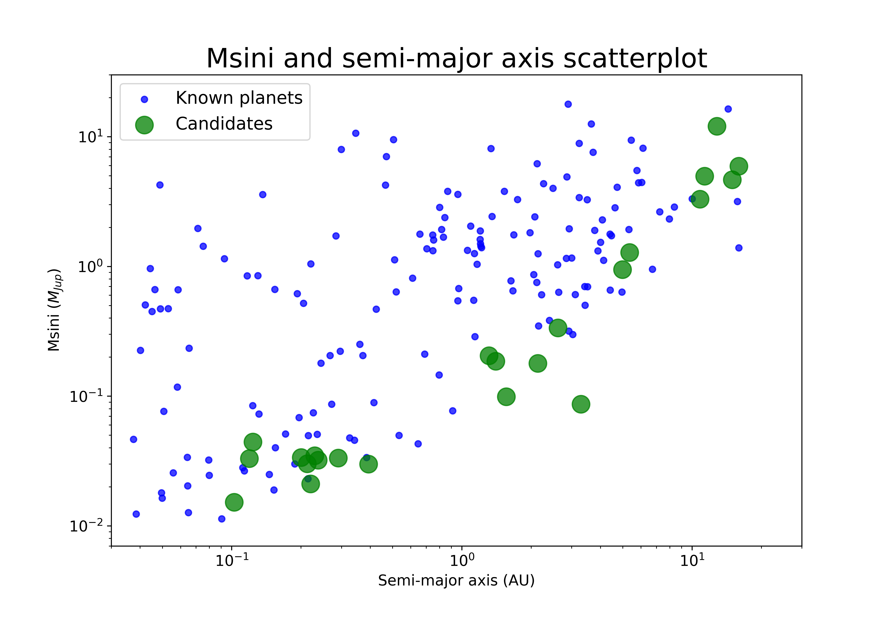

Lee J. Rosenthal
lrosenth@caltech.edu

About
I am a fourth-year Ph.D. candidate in Astronomy at Caltech, working with Andrew Howard.
For my thesis, I am using precise measurements of stellar velocities to discover and study extrasolar planets, within a statistically constructed catalog of main-sequence stars. I am particularly interested in studying systems that host multiple giant planets, and exploring how their occurrence rates scale with stellar properties. I am also interested in using numerical methods to accomplish these tasks, and am currently working on an automated search pipeline, to be published as an open-source software package.
Before joining Caltech, I was a Fulbright Research Scholar at the Heidelberg Institute for Theoretical Studies, where I worked with Volker Springel to study the effects of magnetic fields ongalaxy formation. I went to Haverford College for my B.S.
Research
Planets to be published: 